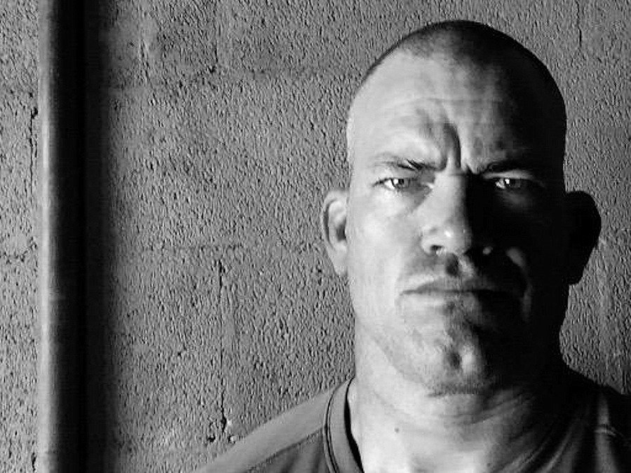

Why this retired Navy SEAL commander has 3 alarm clocks and wakes up at 4:30 a.m.
Retired US Navy SEAL commander Jocko Willink has a habit of frequently tweeting out a photo of his watch when he's ready to take on the day. The watch face always reads somewhere around 4:30 a.m.
Willink rarely needs an alarm clock anymore, but if he does, he's got three, he writes in the book "Extreme Ownership: How US Navy SEALs Lead and Win," which he cowrote with his former platoon commander Leif Babin.
"Discipline starts every day when the first alarm clock goes off in the morning," he writes. "I say 'first alarm clock' because I have three, as I was taught by one of the most feared and respected instructors in SEAL training: one electric, one battery powered, one windup. That way, there is no excuse for not getting out of bed, especially with all that rests on that decisive moment."
Willink led SEAL Team Three Task Unit Bruiser in the 2006 Battle of Ramadi, where Task Unit Bruiser became the most decorated special-operations unit of the Iraq War. He retired after 20 years in the SEALs in 2010, and started the leadership consulting firm Echelon Front with Babin the next year after Babin left active duty.
While waking up before anyone else had an advantage on the battlefield, there's no real need for Willink to get up at 4:30 anymore. But he does so as a matter of principle, and it's why he has three alarms as a safeguard. He explains:
The moment the alarm goes off is the first test; it sets the tone for the rest of the day. The test is not a complex one: when the alarm goes off, do you get up out of bed, or do you lie there in comfort and fall back to sleep? If you have the discipline to get out of bed, you win — you pass the test. If you are mentally weak for that moment and you let that weakness keep you in bed, you fail. Though it seems small, that weakness translates to more significant decisions. But if you exercise discipline, that too translates to more substantial elements of your life ...
Waking up early was the first example I noticed in the SEAL Teams in which discipline was really the difference between being good and being exceptional.
He observed the way the top tier of SEALs were always awake before everyone else, and that they never broke this habit, even if they decided to knock back a few drinks the night before. They used the extra time to work on their gear and study tactics, which paid off in combat.
The level of discipline Willink teaches is still relevant to him today, and it's what he passes on to the corporations he works with through Echelon Front.
"The temptation to take the easy road is always there. It is as easy as staying in bed in the morning and sleeping in," Willink writes. "But discipline is paramount to ultimate success and victory for any leader and any team."